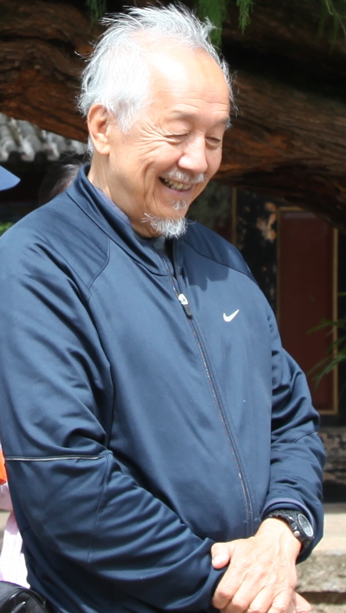
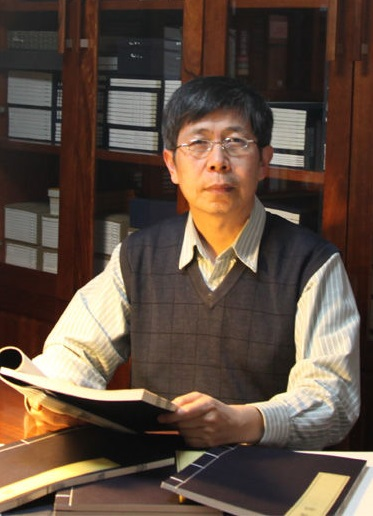
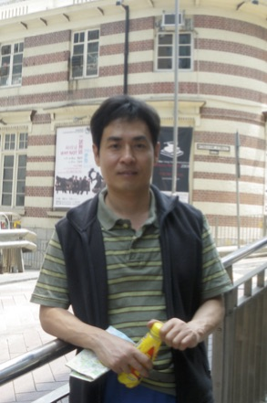
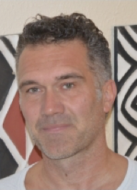

Professor William S.-Y. Wang
Professor Wang was born in Shanghai in 1933. In 1955 he graduated from Columbia College in New York City, and received his Ph.D. in linguistics at the University of Michigan in 1960.
Prof. Wang did research on machine translation from Russian to English at the I.B.M. Research Center at Yorktown Heights. He also held a post-doctoral appointment at the Research Laboratory of Electronics of the Massachusetts Institute of Technology, working on problems of speech analysis. He returned to teach at the University of Michigan for a year before accepting a position at Ohio State University. There he helped establish a Department of Linguistics and a Department of East Asian Languages, and served as the first Chairman of both. Prof. Wang was appointed Professor of Linguistics at the University of California in Berkeley in 1966, where he founded the Phonology Laboratory. In 1973, he founded the Journal of Chinese Linguistics, the first international publication in the field, and continues to serve as its editor.
In 1996 Prof. Wang was appointed Chair Professor of Language Engineering at the City University of Hong Kong. In 2004 he moved to the Chinese University of Hong Kong, where he is now Adjunct Professor in the Department of Electronic Engineering, and Honorary Professor of the Faculty of Arts. He is also Honorary Professor of Peking University, and Adjunct Professor of Hong Kong University of Science and Technology. In 2015, he was appointed Chair Professor of Language and Cognitive Sciences at the Polytechnic University of Hong Kong.
In 1992, he was elected inaugural President of the International Association of Chinese Linguistics when it was founded in 1992; also in 1992, he was elected Academician of Academia Sinica. He has been awarded fellowships from the Fulbright Commission, the Guggenheim Foundation, and from the Center for Advanced Studies at Bellagio (Italy), at Kyoto (Japan), and twice at Stanford (USA).
Prof. Wang works in the multidisciplinary area of the evolution of language and related cognitive abilities. The issues in this area include: the acquisition of native language and foreign language, multilingualism, language evolution at various time scales, the impairment of language due to ageing or disease, and the use of machines to communicate in language.
Professor Kong Jiangping
Kong Jiangping got his B.A. at the department of foreign language and literature, Zhenzhou University in 1981, and MA. at the department of ethnology and anthropology, the graduate school of Chinese Academy of Social Sciences in 1988. He obtained his Ph.D. at the department of electronic engineering, City University of Hong Kong in 2001. He joined the institute of ethnology and anthropology, Chinese Academy of Social Sciences as an associate and full professor during 1988 to 2003, and the department of Chinese language and literature, Peking University as a full professor of phonetics and linguistics and the director of linguistic lab from 2003 to present. He once worked as a visiting professor and the executive director of Hong Kong Putonghua Education and Assessment Centre at the Faculty of Education, Hong Kong University during 2009 to 2010. He is interested in phonation types of languages in China, tone genetic study in Tibetan, acoustical and physiological study on speech modality of Mandarin, phonetic study on traditional oral cultures in China and the speech evolution of human beings.
Professor Yicheng Wu
Yicheng Wu is currently Professor of Linguistics at the Center for the Study of Language and Cognition of Zhejiang University, Hangzhou, China. He was born in Zhoukou in 1966. He received his MA in Linguistics from Shanghai University of Science and Technology in 1993, and his PhD in Linguistics from the University of Edinburgh in 2005. Then, he held a post-doctoral fellowship from 2006-2008 in the Department of Linguistics at the University of Hong Kong. He is a member of the editorial board of several bilingual dictionaries such as Collins Mandarin-English and English-Mandarin Dictionary and Oxford Chinese Dictionary, and a co-editor of a special issue of Linguistics. He is interested in syntax, semantics, pragmatics, and language evolution, and takes an interactive stance on the generation, interpretation and evolution of language. Publications: Classifiers ≠ Determiners; Special issue: Numeral classifiers in East Asia; Copular constructions: Semantic Interpretation and pragmatic enrichment; Which way to move: The evolution of motion expressions.
Professor Klaus Zuberbühler
Klaus Zuberbühler studied Zoology and Anthropology at the University of Zurich before moving to the U.S. to complete an M.A. (1995) and Ph.D. (1998) in Psychology at the University of Pennsylvania. For his thesis research he carried out a series of field experiments with free-ranging primates in the Tai National Park, Ivory Coast. From 1998 to 2001, he worked as a postdoctoral researcher at the Max Planck Institute for Evolutionary Anthropology in Leipzig, before moving to the University of St Andrews, first as a Lecturer, then as a Reader and finally full Professor in Psychology. In 2009, he became a Fellow at the Wissenschaftskolleg in Berlin and in 2011, he was elected ‘Fellow of the Royal Society of Edinburgh’, Scotland’s National Academy of Science. In 2012, he was appointed as Professor of Biology at the University of Neuchatel where he directs a ERC and SNF funded research group on comparative cognition.